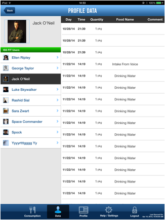

Administrator can access the Data page by clicking on the “Data” button on the bottom menu of any page in the ISS FIT application:
The user consumption data page will be displayed:

On the left side, the users list is shown. You can choose any user to view his/her consumption data.
Clicking on the "Back" button on the top left will take the user to the "Consumption" page.